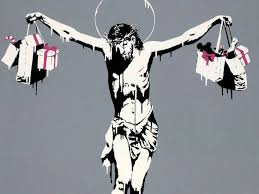

Antes de empezar escucha un poco de música

Representación, con palabras o con otros signos externos, de un pensamiento, una idea, un sentimiento, etc. Def google


La expresión artística es la utilización del arte y los procedimientos artísticos como una vía hacia la exploración, comunicación y manifestación del contenido psíquico de un individuo, es decir, de su mundo emocional, psicológico y cultural.Es decir que toda forma de arte conocido constituye una expresión artística: el pintor, el escritor, el compositor o el intérprete a través de sus respectivos procedimientos le dan forma a una realidad interior, a su mundo interno, y lo plasman en pinturas, relatos, melodías o interpretaciones de distinto tipo, para que el público lo pueda apreciar y pueda conectar, a través de él, con sus propios mundos interiores. Aunque el arte consagrado sea cuestión de artistas profesionales, la expresión artística en cambio se halla al alcance de cualquiera. Es decir, cualquier persona puede acudir a los diferentes procedimientos artísticos conocidos y explorar su mundo interno, sin la aspiración de producir arte y hacerse famosa, sino de conocerse mejor a sí misma y expresarse libremente. En el caso puntual de la obra homenaje a Ástor Piazzolla, la sala se encuentra en el segundo piso del ex edificio del Correo Central, y se trata de la primera sala inmersiva emplazada en esa institución cultural. La sala reproduce en sus paredes, piso y techo animaciones, fotos, videos, material de archivo y obras de arte inspiradas en momentos, ciudades y piezas fundamentales en la vida de Piazzolla. A su vez, el sistema de sonido confiere al público la posibilidad de completar la experiencia sensorial y descubrir nuevos detalles en la obra del músico a partir del tratamiento de las grabaciones multipista originales de clásicos como Otoño porteño, Fuga y misterio, Adiós Nonino, Escualo, entre otros temas. Según explicaron desde el CCK, está equipada con catorce proyectores, un sistema de sonido de veinticuatro parlantes y un revestimiento acústico especialmente diseñado, la sala genera una sensación de inmersión en un entorno envolvente a través de las proyecciones en todo el espacio y de la utilización de técnicas de espacialización sonora. Está abierta al público de miércoles a domingos, de 14 a 20, y la entrada es gratuita, sin necesidad de reserva. “Es una gran instalación que han hecho en el CCK para homenajear a Piazzolla. Está reflejada toda su vida, sobre todo cuando empezó, y las distintas formaciones de músicos que convocó”, dijo Laura Escalada, su última esposa. “Pero también se ve a un Ástor Piazzolla, lamentablemente siempre con un cigarrillo. Si no hubiera sido por el cigarrillo, Ástor no se hubiera enfermado con 69 años, ni se hubiera muerto a los 71”, agregó. Tristán Bauer, ministro de Cultura de la Nación, aseguró, por su parte, que “inaugurar esta sala en el CCK con la figura de Ástor Piazzolla es muy emocionante. Es una sala dotada con lo mejor de la tecnología mundial a nivel de imagen y sonido, que fue desarrollada por técnicos, científicos y artistas argentinos”, afirmó. Respecto a futuras exposiciones en la sala, Bauer aseguró: “Dentro de poco homenajearemos a Leonardo Favio, ya que se conmemoran diez años de su fallecimiento”, aseguró. Fuente: Concepto
¿Por qué nos expresamos?
¿Todos los seres humanos se expresan?
¿Todos nos expresamos de la misma forma?
¿Qué es la expresión artística?
¿Qué pasa cuando no hay expresión?
Estas son algunas de las preguntas que nos hacemos cuando pensamos en la expresión